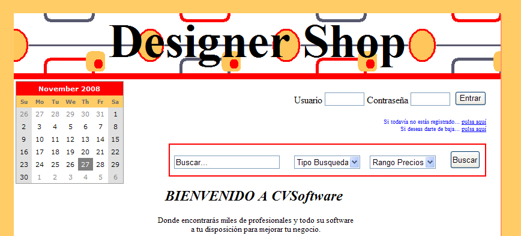

Applicación web desarrollada en Flex, que permite visualizar periódicos online. Es parametrizable por los clientes tanto en apariencia como en idioma. La aplicación fué desarrollada como parte de mi trabajo para Protecmedia S.A.
Debido a que esta aplicación pertenece a Protecmedia y las versiones de los clientes son accesibles solo mediante subscrición, he grabado un video donde se ve la funcionalidad de la misma, en este caso parametrizada para Orbyt.
Actualmente pueden consultarse también versiones gratuitas parametrizadas para otros clientes:
Pagina web estática. Diseñada como proyecto para la asignatura de Diseño de
Interfaces Web del Master Multimedia por la Universidad Pontificia de Salamanca campus Madrid.
La principal filosofía para su diseño ha sido crear una página con el mayor grado se
usabilidad y accesibilidad. Para ello se diseñado contemplando los estandares de XHTML1.1, CSS, así como controlando que su nivel de
accesibilidad sea WAI-AAA.
Tomando también importancia el uso de dos idiomas y las múltiples plataformas desde las que se puede acceder a la web (firefox, Internet Explorer 7, PDA).
Todas estas decisiones de diseño están debidamente detalladas en la memoria disponible en dicha web.
Pagina web dinámica, con partes públicas y privadas. existiendo dos perfiles de usuario distintos con sus menús propios.
La principal filosofía para su diseño ha sido crear una página en ASP.Net pero contemplando los estandares de XHTML1.1, CSS.
Se realizó una web paralela idéntica en J2EE empleando JSP y javascript.

PuccaShop
Técnicas: PHP, mySQL
Página web dinámica desarrollada con PHP y mySQL. Surge para la venta por correo de la tienda Raquel Shop.
Es un ejemplo muy sencillo de web dinámica, y no se ajusta a mis conocimientos actuales de diseño web dinámico, ya que estos con los años han aumentado, trabajando en la actualidad con JSP y ASP.NET principalmente.